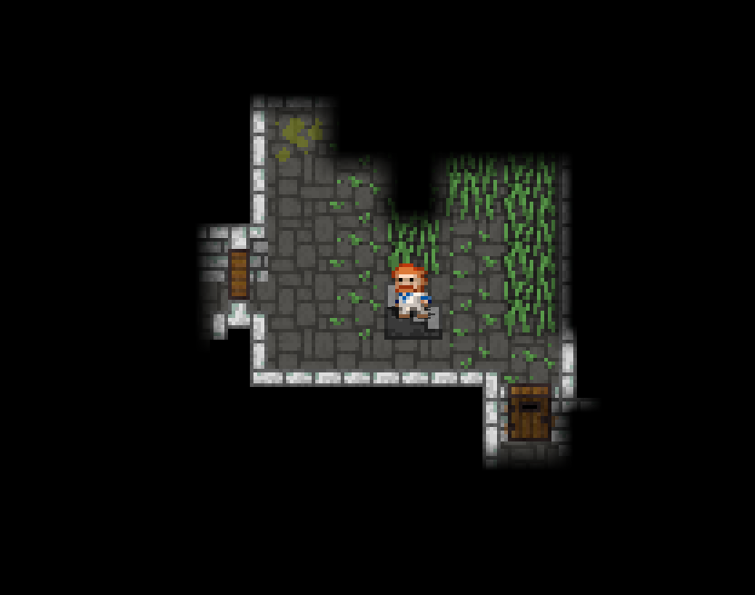
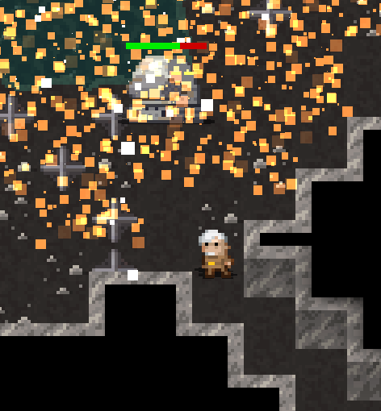

What the game is about
Shattered Pixel Dungeon is a traditional roguelike dungeon crawler that’s simple to start but hard to master! Every game is a unique challenge, with four different heroes, randomized levels and enemies, and hundreds of items to collect and use.
The heroes
Warrior
The warrior (in the picture we can see a warrioir on floor one) is the most basic class, and also the one you unlock at the start of the game. It starts with a shortsword, a cloth armor (like all the other classes) and the warrior's seal, his class artifact, giving it defence over time, in the form of shielding, dependent of his blocking power (his armor). Its subclasses, unlocked when you beat the second boss are:
- Berserker: This subclass makes that when you get hit by an enemy you gain berserk, making your damage higher and higher, upp to 50% when at 100% rage. If you die while being on 100% rage, you instead gain 180 shielding, giving you the chance to beat the enemy and heal before the shielding ends. This subclass is focused on having high defence, so you gain berserk while at the same time not getting hit. (In my opinion this subclass is particulary boring)

Gladiator: This other option is capable of gaining combo, a special buff that lets the player do special moves. you gain 1 combo for every consecutive hit on an enemy, gaining particular abilities at certain levels of combo, making you a literal war machine when at high combo levels. The classic stat for this subclass is getting a ring of furor, and then using many upgrade scrolls on it, to hit faster enemies, so gaining much higher combos.
Mage
The mage is unlocked by using a scroll of upgrade on any item. His class item is the mage staff (in the image), a staff imbued in a wand called the wand of magic missile. you can imbue other wands in the staff, with the benefit of having +1 charges and faster recharge rate. Your staff is also your starting melee weapon. His 2 subclasses are:
- Battlemage: With this subclass you can gain bonus effects depending on the wand imbued in the staff, creating some powerful combos. It also encourages the player to play melee, upgrading armor and so playing bit of like a warrior.
Warlock: The warlock has the ability of zapping an enemy and giving it a debuff called "soul mark" which makes so that when the mob gets hit by any physical attach (including projectiles), the hero gets healed for 2/3rds of the rispettive damage. Even if the purpose of this subclass is also playing melee, i suggest to use a ring of sharpshooting to get healed while at the same time staying away from enemies. In the community of the game there is a particular challenge called "necromancer", which consist of getting a corpse dust from the wandmaker quest to spawn wraiths, and using a wand of corruption to
